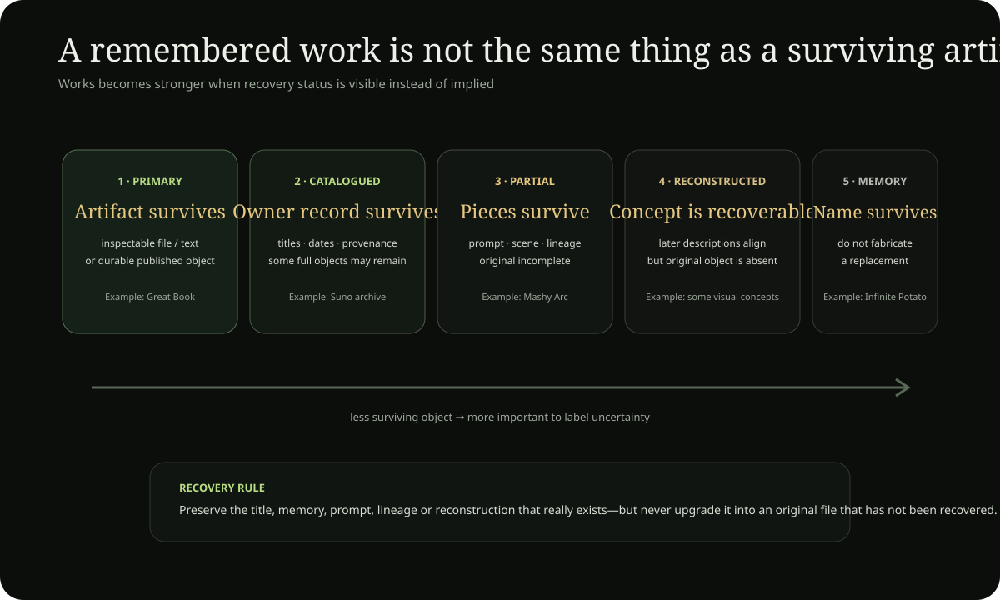

Creative-work boundary: A work does not automatically become doctrine. Creative material can express, test or inspire an idea, but factual and historical claims still require their own evidence trail. Life / project Timeline →
games · writing · performance · music · visual art · experiments
WORKS
The Potatoverse is not only explained. It is played, sung, drawn, simulated, joked about, performed and turned into strange little machines. This room gathers those creative forms so a reader can encounter what the project makes, not only what it claims.
Not genres — objects
What has actually been made
The largest work is still The Great Book of Potato. It is not one clean treatise. It is a composite literary world containing parables, philosophy, speculative science, politics, self-biography, theology, absurdity, diagrams and manifesto-like chapters. Its importance to the project is developmental: many later terms first become inhabitable there even when their final 2026 meanings are different. The book is therefore both a work in its own right and a quarry from which later canon has been extracted, corrected and reorganized.
The Story of Tim Dooley is a different work. Instead of making the Great Book even larger, Story reconstructs dated episodes: the Potato filter, Rational Potato, Cube of the Moon, the 2024 book expansion, April 2025 Axis language, later God/Father statements, public-duration moments and the repository-building period. Story has to refuse scenes when the sources are too thin. Its creative constraint is therefore evidentiary: narrative is allowed to become vivid only where the archive can support the sequence.
The World Map is another work rather than merely a utility. It combines country geometry, subdivisions, cities, directional axes, project layers, evidence overlays, state routing and specialist datasets into an explorable visual object. The map keeps changing because visual systems reveal different problems than prose: overlapping layers, ambiguous ownership, unreadable density, broken click behavior and unclear hierarchy become obvious the moment a reader tries to touch the model.
Games force the metaphors to become mechanics
The Potato of Life Growth Game asks what “growth” means once it has to be represented over turns or generations. Seed, resources, environment, branching and consequence cannot remain inspirational words; they need state changes. The strongest version of the game would let a strategy that looks powerful in one generation damage later viability, making Fruit and future Seed part of the rule system rather than the ending narration.
The Tim Dooley Trading Game turns exchange, value, scarcity, speculation and social belief into play. A price becomes interesting only when it changes behavior. If players can profit by producing instability, the game reveals an incentive problem; if all value is centrally assigned, it reveals dependence on the center. The work is useful because market philosophy becomes visible as a rule set.
AI Potato Town is the small-society experiment. Local agents, resources, norms and accumulated histories can produce patterns nobody explicitly scripted. The interesting output is not whether the town looks cute; it is whether local rules create cooperation, hierarchy, path dependence, exclusion, repair or collapse over repeated interactions.
Potato School turns teaching itself into satire and simulation. A joke lesson can expose how institutions reproduce categories simply by testing for them. The work becomes more than parody when the curriculum, reward structure and student behavior reveal what kind of person the school is actually training.
Visual works are where hierarchy becomes visible—and therefore dangerous
The recurring compositions are concrete: Tim on a salmon/orange couch; a Door beneath or before the Father; roots running underneath; the Son appearing through the Door; red-heifer imagery near the base; dogs or orbiting figures below; dawn or Spudlight above; the World Tree rising through the composition; the vesica formed by overlapping circles; mountain and swamp; spiral and ladder. These images are not interchangeable illustrations. Each arrangement asserts a relation through distance, height, containment and line of sight.
That makes visual art one of the best places to catch conceptual mistakes. If a person is drawn below another, viewers may read inferiority even when the intended relation was simply manifestation. If an intelligence institution is placed inside Swamp, viewers may infer criminality from spatial proximity. If Father and Son are fused into one face, the ontology collapses. The image therefore acts like a test of whether the conceptual distinctions are actually clear enough to draw.
Music stores the project in rhythm rather than explanation
The music archive includes experiments built around dense wordplay, sermon cadence, comic Potato theology, bass-heavy repetition and contrasting genre directions. The preferred palette has ranged through tribal percussion and throat-singing textures, Jamaican drum-and-bass or clownstep energy, house whistles, bluegrass and hybrid electronic forms. Those sound choices matter because each one makes the same words behave differently. A Father declaration over solemn ambient music becomes proclamation; over clownstep it becomes satire; over bluegrass it can become folk myth.
That flexibility is one reason songs should not automatically be mined as doctrine. Lyrics exaggerate for meter and character. Performance voice can say things the canonical prose would phrase more carefully. The Works room preserves that freedom instead of forcing every artistic line into the theology database.
Comedy is one of the project's corrective instruments
Chosen Vegetable, Starchforce, potato Wi-Fi, Turbles, dogs, footstools, McDonald's employment jokes and exaggerated royal titles repeatedly puncture the danger of the system becoming too solemn to question. Comedy can also become cruel, which is why its ethical test is not “was it funny?” alone. The question is whether the joke reveals a contradiction, creates shared play, dehumanizes a target or locks a person into a reusable humiliation role.
The repository itself has become a Work
Thousands of commits have turned files, validators, page shells, readers, maps and provenance records into a deliberately constructed environment. A validator is usually treated as engineering, but here it also shapes the creative object: it decides which pages must have descriptions, which routes remain reachable, which TTS surfaces exist, which map layers own state and which data contracts are allowed to break. The aesthetic increasingly comes from constraint.
This is the important difference between “content archive” and “work.” The repository is not just where the Great Book and Story happen to be stored. Its structure changes how the project can be read, contradicted, repaired and extended. The House is therefore partly architecture and partly literature made executable.
Great Book → · Story → · World Map → · Creative systems archive → · Works/Fruit records →
Potatoism as Fruit
A philosophy becomes more trustworthy when it can make something besides explanations of itself
The Potatoist Fruit test applies to the creative archive too. A song can become memorable without proving doctrine. A game can expose an incentive failure the prose missed. An image can reveal an accidental hierarchy. Code can find a category that the ontology forgot. A meal, garden or joke can create shared life without becoming a theological lecture.
This is why Works is not merely “content produced by Tim.” It is where Potatoism gets forced into forms that resist complete authorial control. Different media push back differently, and that friction can make the philosophy smarter.
Potatoism across ordinary life → · Potato culture → · Portable Great Book lessons →
Creative method
Different media are different instruments of thought
A project becomes more interesting when it stops treating prose as the only serious form. Each medium forces a different question to become concrete.
Prose tests sequence and qualification
An essay has room for definitions, counterarguments and exceptions. Its weakness is that words can make a mechanism sound clearer than it actually is. Prose is strongest when the argument can be restated plainly after the rhetoric is removed.
Story tests motive, time and consequence
A story forces an idea to happen to somebody. It reveals whether a principle still looks admirable when it creates costs, misunderstandings and irreversible choices. Character is where doctrine meets competing goods.
Image tests spatial hierarchy
An image cannot hide who is larger, higher, enclosed, distant, illuminated or connected. That makes visual work excellent for detecting unintended domination or ambiguity in symbolic architecture.
Music tests memory and emotional register
Rhythm decides which phrases become bodily memorable. Repetition can make a line sacred, comic, menacing or comforting. Music therefore reveals how much of a statement's effect belongs to semantic content and how much belongs to delivery.
Games test rules and incentives
A game asks what agents can do, what they are rewarded for, what information they have and how one state becomes another. If “Garden” always wins because the rules award it points by definition, nothing has been learned. A useful simulation allows the preferred philosophy to fail.
Code tests hidden assumptions
Software forces categories into data structures and edge cases. “Everyone can leave” becomes a real question about state transitions. “One source of truth” becomes an ownership rule. Bugs are philosophically useful because they reveal where the conceptual model forgot a case.
Livestreaming tests duration
Long-form public presence exposes boredom, repetition, recovery, reaction and inconsistency in a way polished artifacts do not. The medium's weakness is that immediacy rewards speed and performance; the archive exists partly to let slow reading correct fast speech.
Method rule: choose the medium that can falsify the idea's favorite self-image. The most flattering medium is rarely the most informative one.
Canonical artifact catalogue
What the archive currently knows exists
This catalogue shows what survives, what is partial, what exists only as a concept, and what is currently reconstructed from memory. Inspect the underlying artifact record →
| Artifact | Form / period | Status | Recovery | Current owner | What remains |
|---|---|---|---|---|---|
| The Great Book of Potato | book · 2024 | published-primary | complete primary | Great Book | Continue exact passage → later-development crosswalk. |
| Suno Music Archive | music / lyric corpus · 2026 recovered catalogue | catalogued-partial | substantial catalogue; partial originals | Music owner | Recover more audio/output links, prompts, dates and lyric provenance. |
| Potato of Life Growth Game | game / simulation · 2026 concept | concept | concept only | Creative systems | Recover or build playable artifact before calling it a prototype. |
| Tim Dooley Trading Game | browser market simulation · 2026 concept | concept | concept only | Creative systems | Recover/build implementation and separate simulated data from real market data. |
| Self-Playing AI Potato Town | agent simulation · 2026 concept | concept | concept only | Creative systems | Recover/build runnable rules, logs or screenshots. |
| Potato School | interactive quest satire · 2026 unresolved date | memory-reconstruction | memory only | Creative systems | Locate original conversation/specification. |
| The Mashy Arc | comic transformation narrative · from 26 May 2026 | prototype-specification | partial lineage | Mashy lineage | Recover full original message and associated art. |
| The Infinite Potato | comic cosmology / visual character · date unresolved | memory-reconstruction | memory only | Visual archive | Locate original story/image prompt. |
| Reverse Triangulation | method / diagram · older conversation period | memory-reconstruction | memory only | Creative systems | Recover first user wording and separate later assistant elaboration. |
| Ultimate Eyebrow | fictional transformation comedy · unresolved | memory-reconstruction | memory only | Creative systems | Locate original story/dialogue before quotation. |
| Wall Practice / Carving Sequence | reported performance · ~21 Jul 2026 | prototype-specification | partial | Creative systems | Recover exact description, sequence and duration wording. |
| Heavenly Gardener / Green Ring | image composition · 20 Jul 2026 remembered specification | prototype-specification | partial specification | Visual archive | Recover exact original prompt/image if available. |
| Couch-Throne / Door / Red-Heifer | image composition · 2026 | prototype-specification | partial specification | Visual archive | Recover exact variants and generation lineage. |
Status rule. “Concept” means the structured creative idea is real; it does not imply a surviving build. “Memory-reconstruction” means the archive preserves the remembered object without fabricating the missing original.

Artifact status shelf
What survives as an actual object?
The Works archive now distinguishes a work from a memory of a work. These examples link directly to the current owner record so a reader can see whether the artifact is primary, reconstructed, partially recovered or still missing.
The Great Book of Potato
Primary artifact survives. A major 2024 work remains directly inspectable as an indexed web edition.
Read the Great Book →Suno Music Archive
Recovered catalogue + partial primary material. Titles, generations, lyrics and provenance survive unevenly, so the archive records both what is present and what remains unresolved.
Inspect music archive →Mashy Arc / visual lineages
Partial source lineage. Dated conversation material and composition specifications survive, while some original files remain recovery targets.
Inspect lineage →Infinite Potato and other remembered works
Memory/reconstruction only. The concept can remain in the historical record without inventing an original prompt, image or build that has not been recovered.
Inspect artifact registry →Artifact rule: a title, remembered scene, generated image specification and surviving file are different recovery states. Works should preserve all of them, but never label one as another.
Work inside the life
Made through a life
The Works make more sense when they are placed back into the phases that produced them. This is not a second biography; it is a bridge showing when creative forms become important and what changed around them.
Creative genealogy
What the project learned by making things
A Work matters here not only because it exists, but because making it exposes something prose could not. Games make rules visible. Stories make consequence visible. Music makes cadence and atmosphere memorable. Diagrams expose spatial relations. Comedy reveals where a sacred idea becomes brittle.
The Great Book turns doctrine into a world
Instead of defining Garden, Mud, Sage, Compost or death-and-return abstractly, the book gives them scenes and characters. This is where the project discovers that narrative can function as a laboratory for concepts that are still unstable.
Great Book → · Story context →Games turn symbols into rules
The Growth Game, Trading Game, AI Potato Town and Potato School ask what happens when Seed, inheritance, markets, attention, Doors and cultivation have to become mechanics rather than metaphors.
Instrumented Works records →Visual art makes relation spatial
Couch-thrones, Doors, roots, Gardeners, dogs, red/blue polarity and geometric compositions make proximity, hierarchy, containment and passage visible. The risk is equally visible: a compelling image can make two things look identical when they are only being compared.
Visual Works archive →Performance turns philosophy into pressure
Dense poetry, sermon/comedy hybrids and wall-carving sequences test whether the system survives rhythm, repetition, absurdity and live voice. Rhetorical force is treated as an artistic effect, not factual proof.
Raw performance recovery →Four concrete lessons from making
What each kind of Work is good at revealing
Growth Game — consequence over generations
A simulation can expose tradeoffs between traits, environment, selection and memory. Its strongest use is not to “prove” Potatoism but to let a player see how short-term optimization can alter future possibilities.
Fruit record →AI Potato Town — local rules becoming history
Accelerated seasons and agents make emergent narrative inspectable. The useful question becomes: which large patterns came from rules, and which were projected by the observer?
Creative systems archive →Potato School — teaching can reproduce the thing it mocks
An initiation satire can parody prestige, hidden knowledge and credentials, but the parody fails if readers begin treating the fictional gate as real authority. The externality is part of the Work.
Risk / Fruit record →Visual compositions — clarity can become false certainty
Images are exceptionally good at showing relation and exceptionally dangerous at implying identity. Every visual crosswalk therefore needs a textual boundary explaining what the proximity means and what it does not mean.
Evidence boundary →Worked Fruit evaluations
Five Works tested against consequence rather than intention
These five examples test intended effect against observable consequence. Most reception is still unmeasured; that absence is part of the result rather than a reason to invent success.
Potato of Life Growth Game
game / generational simulation- Intended effect
- Turn growth, inheritance, selection, seasons, tradeoffs and generational memory into playable state transitions.
- Observed reception
- Not yet instrumented; no play-session or comprehension dataset is claimed.
- Externality
- Game mechanics could imply false biological realism or over-reward optimization if abstractions are poorly labeled.
- Future Seed
- Reusable lifecycle simulation engine and Door/state-transition teaching module.
Tim Dooley Trading Game
browser market simulation- Intended effect
- Make price signals, attention, narrative and feedback visible through a playful market interface.
- Observed reception
- Not yet instrumented.
- Externality
- Real-looking tickers could be mistaken for financial guidance; attention mechanics can reward noise.
- Future Seed
- Reusable signal/attention simulator and market-literacy teaching experiments.
AI Potato Town
agent simulation concept- Intended effect
- Compress time so local rules and agent interactions create larger stories that can be inspected.
- Observed reception
- No normalized run or observer dataset yet.
- Externality
- Risk of anthropomorphizing agents or mistaking simulation emergence for evidence about real societies.
- Future Seed
- Agent-based House demonstrator, Door-event sandbox and lifecycle laboratory.
Potato School
interactive teaching satire- Intended effect
- Teach cultivation and thresholds while parodying prestige, credentials and esoteric gatekeeping.
- Observed reception
- Original specification is still a recovery target; no completion-path data exists.
- Externality
- The satire can accidentally reproduce the exclusion/status mechanics it is mocking.
- Future Seed
- Quest-based philosophy curriculum and interactive Door/key/puzzle framework.
Suno Music Archive
music / lyric experiment corpus- Intended effect
- Carry project mood, cadence, motifs and narrative through sound while preserving dated creative experiments.
- Observed reception
- Partially observable but not normalized; plays, dated releases and listener feedback remain incomplete.
- Externality
- Generated-music authorship/provenance can blur; compressed lyrics can accidentally backdate later canon.
- Future Seed
- Reusable music aesthetics, motif chronology, prompt/composition library and remix material.
Works are Fruit, but output is not automatically good Fruit
Every mature Work can declare which Rooms it transforms, who it is for, what effect it intends, what risks or externalities it carries, and what future Seed or reusable capacity it creates.
NutritiveDoes it support life, understanding, capability or resilience?
ReproductiveDoes it create transferable skill, tools, knowledge or future Seed?
RepairDoes it reduce damage or restore viable relation and capacity?
InformationalDoes it improve orientation, provenance or correction?
Poison / sterile riskCan visible success still export harm, dependency or no durable future capacity?
more generative / more reusable future capacity← observed outcome matters more than declared intention →more dependency / externalized harm
Open the Works/Fruit contract → · Inspect the first 8 instrumented Works →
Instrumentation rule. Intended Fruit and observed reception are separate. Where reception has not been measured, the records say so instead of treating archive presence, completion or popularity as evidence of value.
Forms of making
Different media expose different weaknesses in the same idea
A concept that sounds convincing in prose can fail as a game mechanic, become memorable in music, become ambiguous in an image, or become brittle when pushed through comedy. These are not duplicate genres; they are different tests.
Play & Simulation
Games force abstract terms such as growth, inheritance, markets, observation, seasons and Doors to become state changes and rules.
Potato of Life Growth GameGenerational growing, traits, mutation, seasons, selection and family memory.
Tim Dooley Trading GamePrice signals, attention, narrative, scarcity and speculative behavior.
AI Potato TownAutonomous agents, accelerated seasons, observer mode and emergent social history.
Potato SchoolDoors, puzzles and initiation mechanics used to parody prestige and gatekeeping.
Writing & Performance
Voice adds pressure. Sermon can become comedy, philosophy can become rant, symbolism can become poetry, and repeated performance can create a world before it is formally defined.
Dense Potatoverse PoetryIncantatory symbolic prose where Door, Mud, North, dogs, rubble, light and Axis collide through rhythm.
Sermon / Comedy / SpeechRegister-shifting performance that moves between sacred language, critique and absurdity.
Dog House FictionSurveillance/game-show satire about spectatorship, incentives, scarcity and distance between viewer and subject.
Wall Practice / Carving SequenceReported performance using voice, repetition and spatial construction as creative symbolic medium.
Music & Sound
Music carries the project through cadence, atmosphere and bass rather than exposition. The album archive now catalogs 16 album numbers and 640 tracks: Albums 1–3 retain supplied master sequences, while Albums 8–20 have dated folder manifests recovered from source screenshots. Albums 4–7 remain missing from this pass. The album catalogue and the Suno UUID ledger stay separate until exact generation matches are recovered.
Albums 1–3 · supplied mastersThree ordered albums remain the strongest sequence-level records, with measured runtimes and track positions.
Albums 8–20 · dated manifestsFolder screenshots preserve titles, exact visible timestamps and—where shown—format, size and duration. Folder-list order is stored as provenance, not promoted into invented album sequence.
Album 21 · in progressCurrent recovered material includes three new songs with full lyrics plus a 28 Sep 2026 V6-MINI cover of an Album 17 sovereign-king composition. The archive preserves the earlier composition lineage separately from the later cover generation.
Suno Music ArchiveA growing catalogue of Potatoverse song experiments, stable generation IDs where recovered, and complete lyric records where Tim supplied them directly. Listen on Tim's Suno profile ↗
Sound DirectionFrom glitch-step, dub and deep bass to orchestral ballad, punk-rap, jazz fusion, sacred absurdity and high-register theatrical voice.
Open the full Music Archive + TimAmp → · See the homepage album shelf → · Enter the Music & Sound room → · Inspect dated album data →
Visual & Symbolic Art
Images make relation spatial: couch-thrones, Doors and drains, Gardeners, roots, dogs, Swamp, red/blue polarity, Tree staircases and geometric compositions.
Symbolic Composition CorpusImage concepts and generated-art lineages preserved so composition history is not lost inside later explanation.
Diagram & Geometry StudiesVesica, Axis, ladder, tree, mountain and Door diagrams used as visual thinking tools rather than empirical proof.
Recovered & Experimental Works
Conversation archaeology preserves distinctive creative objects even when the original file or transcript is incomplete, while keeping that recovery status visible.
The Mashy ArcComic transformation sequence involving mashed potato, red/blue polarity, wall-to-Door transition and Spudlight.
The Infinite PotatoMany-eyed comic cosmology turning ordinary potato eyes into exaggerated timeline observation.
Reverse TriangulationPhilosophical-comic method of working backward from observations and contradictions toward a hidden relational center.
Ultimate EyebrowEscalating fictional parody built around transformation stages and absurd power-system continuity.